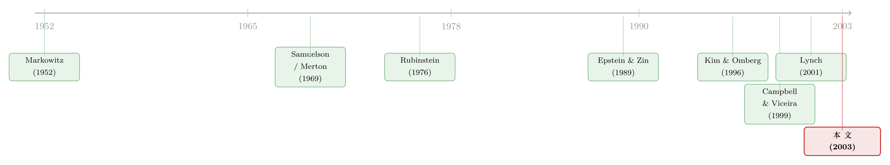

长期投资者的『天书』：把动态资产配置解成一组会做回归的方程
本文读的是 Campbell, Chan & Viceira (2003, Journal of Financial Economics)：他们给出了一套近似解析方法，能把「收益率服从一个向量自回归 (VAR)」的多资产、无限期 Epstein–Zin 投资者的最优消费与组合问题，化成一组线性—二次方程，用简单数值方法瞬间求解。结论是：股票收益的可预测性会大幅推高长期投资者对股票的最优持仓；名义债券的角色取决于实际利率风险的相对重要性；而对保守型投资者而言，通胀挂钩债券能极大地提升福利。
1 一个尴尬的事实
先说一件让金融学有点难堪的事。
学院派金融学几十年来深刻地改造了这个行业——从共同基金管理，到证券定价与发行，再到公司风险管理。可偏偏在一个最朴素、最贴近普通人的问题上，金融经济学家长期以来几乎给不出像样的建议：一个要靠投资养活自己一辈子的长期投资者，到底该怎么配置资产？
你也许会说，这不是早有答案了吗——Markowitz (1952) 的均值-方差分析啊。但 Markowitz 的框架有一个致命的简化：它是静态的。它假设投资者只关心「一期之后」财富面对的风险。可现实里，无论是个人、慈善基金会还是大学捐赠基金，他们要的是在漫长的一生里支撑起一条消费流。
静态与动态之差，不是「精度高低」的差别，而是「问题本身」的差别。一旦投资机会会随时间变化，长期投资者就不只在乎财富本身的波动，还在乎「财富的生产力」——也就是未来投资机会——的波动。
接着，一个自然的问题是：那为什么不用动态的模型？
因为太难解了。
2 真正的拦路虎：Merton 模型解不出来
自 Samuelson (1969) 和 Merton (1969, 1971, 1973) 起，人们就明白，多期组合选择的解可以和静态解天差地别。Merton 指出：如果投资机会随时间变化，一个比对数效用投资者更厌恶风险的人，会主动去对冲投资机会的不利变化——这就给金融资产带来了所谓的跨期对冲需求 (intertemporal hedging demand)。Brennan, Schwartz & Lagnado (1997) 后来给这种「未雨绸缪」的远见取了个好名字：战略资产配置 (strategic asset allocation)。
但 Merton 的连续时间模型几乎写不出闭式解。多年来，唯一能解的特例是对数效用（相对风险厌恶系数等于 1）——可这个特例恰恰最没意思，因为此时 Merton 模型直接退化回了静态模型，对冲需求恒为零。Rubinstein (1976a, b) 通过引入「生存底线」得到了一些洞见（他指出对长期投资者而言，真正的无风险资产是长期通胀挂钩债券，而非短期券），但那套偏好并不标准。常相对风险厌恶下缺乏闭式解，让 Merton 模型始终没能变成一个可用的实证范式——它没能取代 Markowitz，也没能真正走进理财顾问的办公室。
然后，情况开始松动。计算力的进步让人们可以用离散状态逼近来数值求解（Balduzzi & Lynch, 1999；Barberis, 2000；Brennan et al., 1997, 1999；Lynch, 2001）；理论家也找到了一些新的闭式解（Kim & Omberg, 1996；Wachter, 2002；Campbell & Viceira, 1999）。
可是——这里才是本文的张力所在——这些方法都撞上了同一堵墙：
离散状态的数值算法，一旦资产和状态变量一多，就变得又慢又不可靠；近似解析方法则需要一座「令人生畏的代数大山」。没有哪种方法成熟到可以让你写下一个一般的向量自回归来描述资产收益，然后指望把对应的组合选择问题解出来。
本文要做的，就是把这堵墙推倒。
（关于「用模拟器绕开这堵墙」的另一条思路，可参见《把「天书」一样的动态组合，交给一台会做回归的模拟器》；而把动态组合「解到只剩一个常微分方程」的连续时间路线，见《把投资组合的「天书」解到只剩一个常微分方程》。本文走的是第三条路：近似解析。）
3 模型设定
我们一步步把模型搭起来。
资产。 有 \(n\) 种资产。投资者把消费后的财富配置在它们之间，实际组合收益为
$$R_{p,t+1} = \sum_{i=2}^{n} \alpha_{i,t}\,(R_{i,t+1}-R_{1,t+1}) + R_{1,t+1}$$
其中 \(\alpha_{i,t}\) 是资产 \(i\) 的权重，第一种资产是短期工具。注意：作者不假设短期资产无风险——实证里它是名义短期券，名义收益无风险，但实际收益要承担短期通胀风险。
状态动态。 把对数超额收益 \(x_{t+1}\)、实际短期利率 \(r_{1,t+1}\) 与其它状态变量 \(s_{t+1}\)（如股息-价格比）堆成一个 \(m\times 1\) 的状态向量 \(z_{t+1}\)，并假设它服从一阶向量自回归 (VAR(1))：
$$z_{t+1} = \Phi_0 + \Phi_1 z_t + v_{t+1},\qquad v_{t+1}\sim \text{i.i.d.}\ N(0,\Sigma_v)$$
这是全文的引擎。一阶 VAR 看似只是「一阶」，其实并不构成限制——任何高阶 VAR 都能通过扩张状态向量改写成 VAR(1)。它优雅地把「各资产的预期收益依赖于各自的历史与其它预测变量」这件事一网打尽。
这里有一个关键的简化假设：同方差 (homoskedasticity)。状态变量只能通过预测「预期收益」来影响组合选择，而不能预测「风险」的变化。作者引用 Campbell (1987)、Harvey (1989, 1991)、Glosten et al. (1993) 等证据说明，这些状态变量对风险的预测力相当有限，被对预期收益的预测力压倒。（想把「会变的风险」也装进去，见 Chacko & Viceira 的工作，《动态消费与组合选择中的随机波动率》。）
偏好。 投资者拥有 Epstein–Zin 递归效用，它最迷人的地方在于把风险厌恶和跨期替代弹性分了家：
$$U_t = \Big[(1-\delta)C_t^{(1-\gamma)/\theta} + \delta\big(E_t U_{t+1}^{1-\gamma}\big)^{1/\theta}\Big]^{\theta/(1-\gamma)}$$
其中 \(\gamma>0\) 是相对风险厌恶，\(\psi>0\) 是跨期替代弹性，\(\theta \equiv (1-\gamma)/(1-\psi^{-1})\)。当 \(\gamma=\psi^{-1}\) 时退化为标准幂效用；再加 \(\gamma=\psi^{-1}=1\) 就是对数效用。
配合预算约束 \(W_{t+1}=(W_t-C_t)R_{p,t+1}\)，Epstein–Zin 给出对任意资产 \(i\) 都成立的欧拉方程：
$$E_t\!\left[\left\{\delta\Big(\frac{C_{t+1}}{C_t}\Big)^{-1/\psi}\right\}^{\theta} R_{p,t+1}^{-(1-\theta)} R_{i,t+1}\right]=1$$
这就是全部的优化条件。难点在于：当投资机会随时间变化时，它没有已知的闭式解——除非 \(\gamma=1\)（此时最优组合纯短视）或 \(\psi=1\)（此时消费-财富比恒为 \(1-\delta\)）。只有当 \(\gamma=\psi=1\)（对数效用）时，解才完全短视。所有其它情形，都需要近似。
4 解法：先猜，再验，最后化成一组方程
本文的方法论核心，可以浓缩成「对数线性化 + 一个聪明的猜测」。
第一步，把非线性的预算约束对数线性化。 仿照 Campbell (1993, 1996)，在对数消费-财富比的无条件均值附近展开：
$$\Delta w_{t+1} \approx r_{p,t+1} + \Big(1-\frac{1}{\rho}\Big)(c_t-w_t) + k$$
其中 \(\rho\equiv 1-\exp(E[c_t-w_t])\)。当 \(\psi=1\) 时 \(c_t-w_t\) 恒定、\(\rho=\delta\)，这个约束精确成立。
第二步，对欧拉方程做二阶泰勒展开，得到对数线性化的欧拉方程（资产 \(i\) 相对基准资产 1 的版本）：
$$E_t(r_{i,t+1}-r_{1,t+1}) + \tfrac{1}{2}\text{Var}_t(r_{i,t+1}-r_{1,t+1}) = \frac{\theta}{\psi}(\sigma_{i,c-w,t}-\sigma_{1,c-w,t}) + \gamma(\sigma_{i,p,t}-\sigma_{1,p,t}) - (\sigma_{i,1,t}-\sigma_{1,1,t})$$
左边是资产 \(i\) 经 Jensen 不等式调整后的风险溢价；右边把它拆成「与消费增长的超额协方差」「与组合收益的超额协方差」和「与基准收益的协方差」三块。当 \(\psi=1\) 时此式精确。
第三步——也是真正关键的一步——大胆地猜一个解的形式：
$$\alpha_t = A_0 + A_1 z_t \qquad\text{（组合规则：状态变量的线性函数）}$$
$$c_t - w_t = b_0 + B_1' z_t + z_t' B_2 z_t \qquad\text{（消费规则：状态变量的二次函数）}$$
「组合是线性的、消费是二次的」——这个猜测一旦代回欧拉方程，就会发现：方程两边都化为状态变量的线性—二次型，于是系数矩阵 \(A_0,A_1,b_0,B_1,B_2\) 必须满足一组相互嵌套的线性—二次方程。这些方程手算太繁琐，但数值上瞬间可解。
这就是全文的魔法：一个本来「天书」般的随机动态规划问题，被驯化成了一组可以用线性代数反复迭代求解的方程。随着时间步长缩小，当 \(\psi=1\) 时解趋于精确；步长短、\(\psi\) 接近 1 时是高度准确的近似。
5 核心方程：把组合拆成「短视」与「对冲」两半
求解对数线性化欧拉方程，最优组合可以写成两项之和——这是全文最该盯住的一个核心：
第一项是短视成分 (myopic component)。当基准资产无风险 \((\sigma_{1x}=0)\) 时，它就是预期超额收益向量、按风险协方差矩阵之逆与风险厌恶倒数缩放——一模一样的 Markowitz。它不依赖 \(\psi\)。
第二项是跨期对冲需求。Merton (1969, 1971) 早就说过：比对数投资者更厌恶风险的人，会对冲投资机会的不利变化。这里看得格外清楚：当 \(\gamma=1\) 时 \(\theta=0\)，对冲项凭空消失；当投资机会恒定（VAR 里只剩截距项）时，对冲项的系数矩阵 \(K_0,K_1\) 都是零矩阵，对冲需求同样为零。
本文还有一个漂亮的副产品：因为状态向量是多维的，对冲需求可以被逐个状态变量地分解——你能精确地说出，「对股息-价格比的对冲」贡献了多少股票仓位，「对收益率利差的对冲」又贡献了多少。这是单变量模型给不了的。作者还证明：给定对数线性化参数 \(\rho\)，最优组合规则其实独立于 \(\psi\)——\(\psi\) 只通过影响 \(\rho\) 来间接进入组合选择。
6 实证：可预测性把股票仓位推上了天
把方法用到数据上。作者估计了一个包含实际短期利率、股票超额收益、名义债券超额收益，外加三个经典预测变量——短期名义利率（Fama & Schwert, 1977；Campbell, 1987）、股息-价格比（Campbell & Shiller, 1988；Fama & French, 1988）、长短期债券收益率利差（Fama, 1984；Fama & French, 1989；Campbell & Shiller, 1991）——的 VAR，分别用长期年度数据和战后季度美国数据。
三个核心结论：
其一，股票收益的可预测性会大幅推高最优股票需求。 这是均值回复的逻辑：股息-价格比高时预期收益高，长期投资者愿意超配；而因为收益会均值回复，长期持有股票的「有效风险」比单期视角看起来小得多。于是对冲需求把股票仓位进一步抬高。（这正是「贴现率会变」这一思想在组合选择里的回声，参见《贴现率：资产定价的中心议题》。）
其二，名义债券的角色取决于实际利率风险的相对重要性。 名义债券能对冲实际利率的再投资风险，但本身又暴露在通胀风险下。它在长期组合里到底是朋友还是负担，要看实际利率风险相对于其它风险源有多重要——而不是一个普适的常数答案。
其三，长期通胀挂钩债券对保守投资者福利的提升极大。 作者仿照 Campbell & Shiller (1996) 构造了假想的通胀挂钩债券收益数据，把股票、通胀挂钩债券、名义债券、短期券一起放进组合。结论呼应了 Rubinstein 当年的洞见：对足够厌恶风险的长期投资者，真正的「无风险资产」是长期通胀挂钩债券——它锁定了实际消费，而短期券因为暴露在再投资风险下反而不安全。
7 文献脉络
把这条线索理一理。
源头是 Markowitz (1952) 的静态均值-方差，与 Samuelson (1969)、Merton (1969, 1971, 1973) 的多期理论——前者给了范式，后者点破了「动态≠静态」，并提出了跨期对冲需求的概念。
中段是漫长的「解不出来」的困境，以及三条突围路径并行：一是数值动态规划（Brennan, Schwartz & Lagnado, 1997；Barberis, 2000；Lynch, 2001）；二是新的闭式解（Kim & Omberg, 1996；Wachter, 2002）；三是 Campbell & Viceira (1999, 2001) 开创的近似解析法——在 \(\psi=1\) 这个已知精确解附近做扰动展开。

本文正坐落在第三条路径的顶点：它把 Campbell & Viceira (1999) 的单资产、单状态变量框架，扩展成了能处理任意 VAR、任意多资产与状态变量、且不施加任何组合约束的多元框架。与之最接近的两篇——Brennan et al. (1999) 用幂效用 + 数值动态规划 + 借贷与卖空约束，Lynch (2001) 用幂效用定义在消费上——都依赖数值方法并施加约束；而本文凭近似解析的简洁，换来了「一般 VAR + 无约束 + 对冲需求可分解」这三样别人难以同时兼得的东西。
8 评论与延伸（Q&A + 研究方向）
(a) 几个可能的疑问
Q：这套近似解，到底有多「近似」？会不会在参数极端时崩掉？
近似的根来自两处：预算约束的对数线性化（在 \(\psi=1\) 时精确），以及欧拉方程的二阶泰勒展开（在收益与消费联合对数正态时精确）。作者的诚实态度是：当时间步长短、\(\psi\) 接近 1 时，近似高度准确；\(\psi\) 离 1 太远时误差会变大。这是「扰动解」的固有代价——精度以「离已知精确点的距离」为半径。
Q：跨期对冲需求和短视需求，本质区别在哪？
短视需求只看「当下」的风险溢价，是 Markowitz 的均值-方差解，与 \(\psi\) 无关、与未来无关。对冲需求则源于「投资机会会变」：当 \(\gamma>1\) 的投资者预见到未来预期收益可能恶化，他会提前持有那些「在坏消息来时还能涨」的资产来对冲。\(\gamma=1\)（对数效用）时对冲需求恒为零——这是辨别二者的最干净的试金石。
Q：为什么作者要假设同方差？这不是把「风险会变」这件大事给扔了吗？
是的，这是模型最实质的限制：状态变量只能预测预期收益，不能预测风险。作者的辩护是实证性的——已有证据（Campbell, 1987；Harvey, 1989, 1991；Glosten et al., 1993）显示这些变量对风险的预测力被对预期收益的预测力压倒。这是一个「为了可解性而做的、有证据支撑的」取舍，而非疏忽。
Q：用 Epstein–Zin 而非幂效用，换来了什么？
换来了把风险厌恶 \(\gamma\) 和跨期替代弹性 \(\psi\) 分开调节的自由。这一点在长期组合里至关重要：\(\gamma\) 主导组合的风险取向，\(\psi\) 主导消费的跨期分配。更妙的是，作者证明给定 \(\rho\)，最优组合独立于 \(\psi\)——这让「组合选择」和「消费选择」在一定程度上解耦，分析起来干净许多。
Q：可预测性推高股票仓位，会不会只是「数据挖出来的可预测性」在作怪？
这是最该警惕的地方。组合权重对预期收益的估计极其敏感，而股息-价格比等预测变量的可预测性本身在统计上充满争议（Stambaugh, 1999 的预测回归偏误、Goetzmann & Jorion, 1993、Nelson & Kim, 1993 的小样本问题）。本文给的是「如果可预测性为真，最优组合会怎样」的条件答案，而非「可预测性一定为真」的断言。把估计不确定性显式纳入，是它留给后人的功课。
Q：模型说的「无约束」，现实里靠谱吗？
模型不施加借贷与卖空约束，因此在可预测性强、风险溢价高的状态下，最优股票仓位可能高得离谱（远超 100%）。这既是优点（解析上干净、能看清对冲需求的全貌），也是软肋（现实里没人能这么加杠杆）。Brennan et al. (1999) 与 Lynch (2001) 之所以宁可用数值方法，正是为了能施加这些约束。
(b) 几个可能的研究问题与提案
1. 把「外资持有人」装进状态变量的 VAR。 【经济故事】如果某类资产（如新兴市场公司债）的预期收益可被「外资持有比例/资金流」预测，那么 Koijen-Yogo 式的需求体系下，外资流入流出本身就是一个会被长期投资者对冲的状态变量。本文框架能精确算出「对外资流动的对冲」贡献了多少本币资产仓位。 【可行性】中。需要资产层面的外资持仓面板 + 一个可信的 VAR 设定。识别难点在于外资流与预期收益的内生性——需要外生的资金流冲击（如指数纳入事件）来锚定 VAR 的预测块。
2. 公司债流动性作为一个可对冲的状态变量。 【经济故事】公司债的流动性溢价具有强烈的时变性与均值回复（危机时飙升、平时回落）。一个长期信用投资者是否应该、以及如何对冲「流动性会枯竭」的风险？把流动性度量放进 VAR，本文方法能给出「流动性对冲需求」的解析分解。 【可行性】高。TRACE 层面的流动性度量已成熟，VAR 设定直接可写。主要工作量在于把流动性的同方差假设放松（流动性危机恰恰是异方差的），这会逼着研究者向 Chacko-Viceira 的随机波动率扩展靠拢。
3. 把估计不确定性显式纳入这套线性—二次解。 【经济故事】本文把 VAR 参数当成已知。但组合权重对预期收益估计极度敏感，贝叶斯/稳健性的视角（Xia, 2001；A.ıt-Sahalia & Brandt, 2001）会大幅改写对冲需求。能否在保持「线性—二次可解」的同时，引入参数不确定性？ 【可行性】中。已有连续时间的学习模型，但要在本文的离散时间近似框架里保持解析可解性，是个真问题——很可能只能得到部分解析、部分数值的混合解。（相关思路见《当投资者不再相信自己的模型：稳健性如何撑起股权溢价》。）
4. 多资产对冲需求分解的实证检验。 【经济故事】本文最独特的产物是「对冲需求可按状态变量逐项分解」。但真实的长期投资者（养老金、捐赠基金）的持仓，到底有没有体现出这种「对股息-价格比/利差的对冲」结构？ 【可行性】中偏低。机构持仓数据可得，但要把观测到的仓位变化归因到「对冲某个特定状态变量」，需要很强的辅助假设，识别上颇具挑战。
9 我的判断与参考文献
贡献。 这篇论文真正的贡献不是某个实证数字，而是一把方法论的钥匙：它把「一般 VAR + 多资产 + Epstein–Zin + 无约束」的长期组合问题，降维成一组能秒解的线性—二次方程，并让跨期对冲需求第一次可以被逐个状态变量地拆开看。在它之前，你只能在「数值动态规划的慢而不稳」和「闭式解的削足适履」之间二选一；它给了第三条路。从此 Merton 模型才真正向「可用的实证范式」迈进了一步。
对识别（与近似）的担忧，我有两点。 其一是同方差假设——它把「风险会变」整个排除在外，而长期投资里风险的时变（尤其是危机时的流动性与波动率飙升）恰恰可能主导对冲需求；本文的对冲需求全部来自「预期收益会变」这一条腿。其二是对可预测性的依赖——组合权重对预期收益估计的敏感度，加上股息-价格比等预测变量在统计上的脆弱（Stambaugh 偏误、小样本问题），意味着「可预测性大幅推高股票仓位」这个结论的条件性必须被反复强调：它说的是「如果可预测性为真」。
后续想看到什么。 三件事：把估计/模型不确定性显式塞进这套线性—二次解；把同方差放松成随机波动率而仍保留近似解析性；以及用真实的机构长期持仓，去检验「对冲需求按状态变量分解」这个漂亮的理论产物，在数据里到底找不找得到影子。
参考文献
- Barberis, N.C. (2000). Investing for the long run when returns are predictable. Journal of Finance 55, 225–264.
- Brennan, M.J., Schwartz, E.S., Lagnado, R. (1997). Strategic asset allocation. Journal of Economic Dynamics and Control 21, 1377–1403.
- Brennan, M.J., Schwartz, E.S., Lagnado, R. (1999). The use of treasury bill futures in strategic asset allocation programs. In: World Wide Asset and Liability Modeling, Cambridge University Press, 205–228.
- Campbell, J.Y. (1993). Intertemporal asset pricing without consumption data. American Economic Review 83, 487–512.
- Campbell, J.Y., Shiller, R.J. (1988). The dividend–price ratio and expectations of future dividends and discount factors. Review of Financial Studies 1, 195–228.
- Campbell, J.Y., Shiller, R.J. (1996). A scorecard for indexed government debt. In: NBER Macroeconomics Annual 11, 155–197.
- Campbell, J.Y., Viceira, L.M. (1999). Consumption and portfolio decisions when expected returns are time varying. Quarterly Journal of Economics 114, 433–495.
- Campbell, J.Y., Viceira, L.M. (2001). Who should buy long-term bonds? American Economic Review 91, 99–127.
- Epstein, L., Zin, S. (1989). Substitution, risk aversion, and the temporal behavior of consumption and asset returns: a theoretical framework. Econometrica 57, 937–969.
- Fama, E., French, K. (1988). Dividend yields and expected stock returns. Journal of Financial Economics 22, 3–27.
- Kim, T.S., Omberg, E. (1996). Dynamic nonmyopic portfolio behavior. Review of Financial Studies 9, 141–161.
- Lynch, A.W. (2001). Portfolio choice and equity characteristics: characterizing the hedging demands induced by return predictability. Journal of Financial Economics 62, 67–130.
- Markowitz, H. (1952). Portfolio selection. Journal of Finance 7, 77–91.
- Merton, R.C. (1971). Optimum consumption and portfolio rules in a continuous-time model. Journal of Economic Theory 3, 373–413.
- Rubinstein, M. (1976a). The strong case for the generalized logarithmic utility model as the premier model of financial markets. Journal of Finance 31, 551–571.
- Samuelson, P.A. (1969). Lifetime portfolio selection by dynamic stochastic programming. Review of Economics and Statistics 51, 239–246.
- Wachter, J. (2002). Portfolio and consumption decisions under mean-reverting returns: an exact solution for complete markets. Journal of Financial and Quantitative Analysis 37, 63–91.